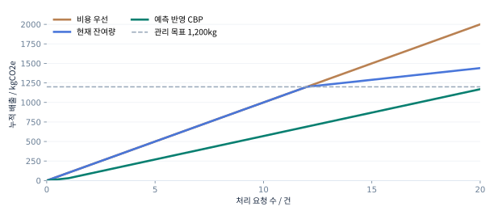
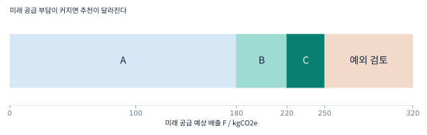

다음 운송까지 보는
파렛트 탄소예산
CBP
CARBON BUDGET POOLING
잔여 공급수요 예측을 반영한
파렛트 재배치 의사결정 지원
문헌 기반 문제 설정 + 재현 가능한 합성 실험
현장 실증 전 단계 · 특정 기업의 운영 사실과 구분
현장 실증 전 단계 · 특정 기업의 운영 사실과 구분
잔여 공급수요 예측을 반영한
파렛트 재배치 의사결정 지원
CBP는 앞으로 처리할 파렛트 공급 물량에 필요한 배출량을 미리 고려해, 현재 운송안을 추천하는 의사결정 지원 방식이다. 기간별 내부 배출 관리 목표에서 실제 배출, 이미 확정된 운송, 남은 수요의 예상 배출과 오차 여유를 차감한다. 남은 범위 안에서 공급·납기·안전·비용 조건을 만족하는 최소비용 후보를 고른다.
| 항목 | 핵심 내용 |
|---|---|
| 연구 배경 | 파렛트는 반복 사용되는 운송 자산이며, 다수 주체 사이의 흐름 조정이 필요하다. [R2 초록] |
| 연구 질문 | 기간 목표를 다음 운송 선택에 연결할 때, 남은 수요 예측이 목표 초과와 비용의 절충을 개선하는가? |
| 차별화 초점 | 탄소 고려 자체의 최초성이 아니라, 남은 공급을 위한 여유 계산과 설명 가능한 예외 처리의 결합. |
| 구현 범위 | 주어진 완결 운송 후보 중 한 안을 추천하는 Python 모형과 가상 입력 데모. |
| 현재 증거 | 정의된 규칙의 계산·분기 및 합성 요청열 재현. 현장 비용 절감이나 실제 감축 실적은 미확인. |
| 현장 도입 조건 | 관리 목표의 책임자, 비교 가능한 배출량, 실행 가능한 대안, 예외 승인 절차가 존재해야 한다. |
본 문서에서 ‘최소비용’은 현재 주어진 허용 후보 집합 안의 최소값이다. 기간 전체·운송망 전체의 전역 최적해를 의미하지 않는다.
빠른 이해: 연구 요약 → 배출 여유 80kg 사례 → 같은 80% 대조.
연구 검토: 배경·문헌 → 예산 정의 → 모형 → 실험·실패 조건.
도입 검토: 배출 산정 → 구현 → 실증·평가지표 → 한계.
표지를 포함한 쪽수다. 목차와 참고문헌 링크를 누르면 해당 페이지 또는 출처로 이동한다.
유닛로드시스템에서 파렛트는 화물을 일정 단위로 취급·보관·운송하는 기반이다. 재사용 가능한 자산이라는 장점과, 필요한 장소·시간에 공급해야 한다는 운영 문제를 함께 봐야 한다. 파렛트 공급망에는 제조·공급·사용·회수·수리·재사용 등의 활동이 연결된다.
Tornese 등(2021)의 파렛트 공급망 검토논문은 파렛트의 반복 수리·재사용, 다양한 이해관계자, 물류 대안과 흐름 조정의 복잡성을 설명한다. 이 보고서는 해당 논문의 공개 초록을 확인했으며, 개별 기업의 공차율이나 국내 시장 규모를 이 문헌에서 추정하지 않는다. [R2]
ISO 14083:2023의 공식 설명은 여객·화물 운송사슬에서 발생하는 온실가스 배출의 정량화·보고를 위한 공통 방법론을 제시한다고 명시한다. 이는 운송 배출을 비교 가능한 방식으로 다뤄야 한다는 근거이며, 기업이 배차별 탄소예산을 이미 운영한다는 증거는 아니다. [R1]
이 질문은 풀링사 또는 동일한 관리 권한을 가진 운영망이 기간 감축 목표를 일상 운영에 반영하려는 경우에 성립한다. 목표를 적용할 의사나 권한이 없다면 CBP의 도입 필요성은 약해진다.
재배치가 언제나 낭비라는 주장, 기존 기업이 비용만 고려한다는 주장, 국내 공차율 수치는 사용하지 않았다.
| 의사결정 수준 | 알고 있는 것 | 추가로 필요한 연결 |
|---|---|---|
| 기간 관리 | 이번 기간의 감축·배출 관리 목표 | 현재 요청에 허용할 배출 여유 |
| 운송 실행 | 재고·수량·납기·가용 차량·비용 | 목표 초과 위험과 대안 비용 |
| 사후 정산 | 운송 후 확인한 연료·활동자료 | 다음 요청에 반영할 잔여 여유 |
특정 회사가 이러한 문제를 실제로 겪는다고 단정하지 않는다. 운영자 인터뷰와 과거 요청 기록으로 “목표를 운영에 반영하는 데 어려움이 있는가”, “대안 운송을 선택할 권한이 있는가”, “추천을 바꿀 만큼의 비용·배출 차이가 존재하는가”를 확인해야 한다.
로지스올의 배차용 탄소예산, 내부 의사결정 방식, 데이터 제공 가능성은 확인되지 않았다. 회사명은 잠재적 적용 맥락이며 협력·검증 기관을 뜻하지 않는다.
| 근거 | 확인 범위 | 이 제안에 주는 의미 |
|---|---|---|
| R2 · Tornese 등, 2021 | 공개 초록: 파렛트 관리 의사결정과 문헌 검토 | 재사용 물류의 흐름 조정은 기존 연구 대상이다. |
| R3 · Tornese 등, 2018 | 서지·제목: 적재 조건·재배치 전략의 환경·경제 영향 | 파렛트 재배치와 환경·경제를 함께 다룬 선행연구가 존재한다. |
| R4 · Chen 등, 2013 | 서지·제목: The carbon-constrained EOQ | 탄소 제약을 운영 의사결정에 넣는 발상 자체를 신규라고 주장할 수 없다. |
| R5 · Shang 등, 2025 | 서지·제목: 탄소를 고려한 파렛트 풀링 입지·경로 문제 | 관련 분야의 범위와 최근 선행연구를 추가 확인해야 한다. |
R3·R4·R5는 원문을 읽은 논문으로 표시하지 않았다. 체계적 문헌고찰이나 특허 신규성 조사를 완료한 상태가 아니며, 연구 공백의 확정은 후속 과제다.
| 질문·가설 | 확인할 관측 | 기각·재설계 조건 |
|---|---|---|
| RQ1 · 수요 예측이 선택을 바꾸는가? | 사용률을 고정하고 잔여 수요만 바꾼 대조 실험 | 실행 가능한 대안이 없어 선택이 변하지 않음 |
| H1 · 예측을 반영하면 기간말 초과가 줄어드는가? | 동일 요청열에서 비용 우선·현재 잔여량·예측 반영 정책 비교 | 초과 감소가 없거나 공급 미충족으로만 감소 |
| H2 · 추가 비용이 수용 가능한가? | 총비용·건당 비용·추가 비용/감축량·담당자 승인율 | 운영자가 정한 비용 범위를 반복 초과 |
| H3 · 오류 상황에서도 의사결정이 설명되는가? | 수요·배출 오차, 운송 취소, 데이터 지연에서 경고와 추적 기록 | 오류가 숨겨지거나 안전·납기 조건을 자동 완화 |
현재 단계는 “이 규칙이 이렇게 작동한다”를 보여 준다. “현장에서 비용을 낮추면서 탄소를 크게 줄인다”는 주장은 실제 데이터와 적절한 비교군이 필요하다. 부정적인 결과도 모델의 적용 범위를 알려 주는 연구 결과로 기록한다.
가설은 통계적으로 검증된 결론이 아니다. 개별 운송 건을 독립 표본으로 오인하지 않도록 기간·거점 간 의존성을 고려한다.
| 구분 | 의미 | CBP에서의 취급 |
|---|---|---|
| 기후과학의 탄소예산 | 특정 온도 목표와 관련된 누적 배출 개념 | 본 모형의 운영 입력과 직접 동일시하지 않음 |
| 내부 운송 탄소예산 B | 정해진 운영 범위·기간의 배출 관리 목표 | 운영 주체가 설정·승인하는 제안 입력 |
| 배출권·탄소 크레딧 | 별도 제도·산정·검증 요건을 갖는 권리·단위 | 사용하지 않음. 예산 잔여분을 판매하지 않음 |
도입 기업의 물류 운영 책임자와 지속가능경영 담당자가 대상 거점·운송·기간·산정 범위를 합의한다. 과거 동일 범위의 배출량을 재구성하고, 감축 목표와 예상 활동량을 함께 검토해 예산을 승인한다. CBP가 임의로 법적 한도를 생성하는 구조가 아니다.
위 식은 내부 목표를 만드는 하나의 방법이다. 수요·거리·거점 구성이 달라지면 단순 전년 비교가 부적절할 수 있다. 배출 원단위 목표를 쓸 경우 예상 활동량을 곱해 운영 목표를 만들 수 있지만, 물량 증가에 따라 총배출이 늘 수 있으므로 절대량과 원단위를 함께 보고한다.
내부 목표가 없는 기업에는 먼저 대안별 비용·배출을 보여 주는 비교 도구로 적용 가능성을 검토한다. 목표값에 대한 조직적 합의 없이 “준수”를 강제하지 않는다.
동일 풀링 운영망의 호환 파렛트, 선택된 거점 사이의 재배치 운송, 고정된 관리 기간을 대상으로 한다. 파렛트 제조·수리·폐기까지 포함한 전 생애주기 평가를 현재 모형의 성과로 주장하지 않는다. 구매·수리·회수의 영향은 향후 범위 확장 시 별도로 포함한다.
| 기호 | 단위 | 정의·중복 방지 |
|---|---|---|
| B | kgCO₂e | 동일 범위의 기간 관리 목표 |
| E | kgCO₂e | 정산 완료된 누적 실제 배출 |
| K | kgCO₂e | 확정했지만 아직 정산하지 않은 운송의 예상 배출 |
| F | kgCO₂e | 현재 요청과 K에 포함된 요청을 제외한 미래 공급의 예상 배출 |
| U | kgCO₂e | 현재·미래 배출 추정의 불확실성에 대한 운영 여유 |
| H | kgCO₂e | 현재 요청에 사용할 수 있는 계획상 배출 여유 |
| êⱼ / Cⱼ / Tⱼ | kgCO₂e / 만원 / h | 후보 j의 예상 배출 / 완결 운송비 / 예상 도착시간 |
현재 요청은 F에서 제외한다. 이미 확정된 요청은 K에만 두며 F에 다시 넣지 않는다. 정산 때는 해당 예상량을 K에서 빼고 실제량을 E에 넣는다. 확정 취소 시 K를 해제하고 요청 상태에 따라 F를 다시 계산한다.
모형은 이러한 장부 상태를 입력받는다. 동시 배차의 원자적 예약·중복 방지·실제 장부 정산은 아직 구현되지 않았다.
q̂ᵣ는 남은 기간에 발생할 요청 유형 r의 예상 공급량, ĝᵣ는 동일 유형의 계획 배출 원단위이다. 유형은 출발·도착 권역, 파렛트 규격, 운송 조건 등을 기준으로 정한다. 단위를 매와 kgCO₂e/매로 맞추면 F는 kgCO₂e가 된다. 단순 일수 비례만으로 수요를 가정하지 않는다.
| 자료 | 사용 방식 | 주의점 |
|---|---|---|
| 확정 주문·공급 일정 | 현재·확정 운송을 분리하고 미래 물량 합산 | 취소·중복·기간 경계 점검 |
| 반복 수요 이력 | 요일·기간·거점 유형별 기본 예측 | 미래 실적을 학습 입력에 넣지 않음 |
| 비교 가능한 과거 운송 | 유형별 예상 배출 원단위 추정 | 거리·차종·적재·산정 경계 일치 |
| 예측 오차 이력 | U를 보정하고 주기적으로 재평가 | 현재와 미래의 합산 오차를 다룸 |
오차 여유는 과거 검증 구간의 상방 오차 분포를 참고해 정할 수 있다. 분포 변화·오차 상관·후보 선택의 영향이 있으므로 특정 분위수를 사용했다고 목표 준수 확률이 자동 보장되지는 않는다. 본 합성 사례의 U=20은 임의의 설계값이다.
현재 구현은 F·U를 입력받아 계산하며 예측기를 학습하지 않는다. 예측된 저탄소 대안이 실제로 확보되지 않으면 F를 낮게 잡은 계획은 실패할 수 있다.
각 후보는 현재 요청 전체를 충족하는 완결 운송안이다. 수량·적재 용량·규격 호환·안전·가용성 확인·도착 기한·비용 상한을 통과해야 한다. 후보 생성과 경로 최적화는 별도의 업무이며 현재 추천 모형이 수행하지 않는다.
| 상태 | 조건 | 출력 |
|---|---|---|
| 기본 운송 | P의 최소비용 후보가 G에도 포함 | 기본안 추천 |
| 대안 전환 | 다른 후보만 G에 포함 | 가장 저렴한 허용 대안 + 추가비용 |
| 탄소 예외 검토 | P는 있으나 G가 없음 | 자동 추천 없음; P의 최소배출 대안과 계획 여유 부족량 제시 |
| 공급 예외 검토 | P가 없음 | 추천 없음; 제약 위반 사유와 재계획 요청 |
비용 동점이면 예상 배출, 도착시간, ID 순서로 결정한다. 탄소 예외 대안은 배출·비용·도착·ID 순서로 비교한다. 안전·규격 조건은 탄소 목표를 이유로 자동 완화하지 않는다.
선택 계산의 10⁻⁹kg 허용오차는 부동소수점 비교용이며 운행 오차 허용량이 아니다. 추천 모형이 승인 없이 실제 배차를 실행하지 않는다.
이 페이지의 모든 수치는 설명용 가정이다. 실제 차량·노선의 견적·배출계수로 추정한 실적이 아니다.
| 동일 요청: 1,000매 / 8h 이내 | A | B | C |
|---|---|---|---|
| 완결 운송비 / 만원 | 100 | 108 | 115 |
| 예상 배출 / kgCO₂e | 100 | 60 | 30 |
| 예상 도착 / h | 4 | 6 | 7 |
| 비용 상한 120만원 | 통과 | 통과 | 통과 |
| 배출 여유 80kg | 초과 | 통과 | 통과 |
| 최종 판단 | 배출 여유 부족 | 허용 후보 중 최소비용 | 가능하나 더 비쌈 |
평가량 980은 실제 배출량이 아니다. 미래 예상치와 여유를 포함한 계획 수치다. A를 선택하면 여유 포함 평가량은 1,020이므로 보수적 계획 기준을 넘는다.
비용 +8만원을 자동으로 정당화하지 않는다. 허용 비용 상한과 감축 목표를 운영자가 승인했을 때만 이러한 절충이 유효하다. 이 사례의 추가비용/예상 감축량은 200만원/tCO₂e이며 시장 배출권 가격이 아니다.
누적 실제 배출 800kg, 기간 목표 1,000kg, 확정 미정산 운송 0kg, 오차 여유 20kg를 동일하게 둔다. 앞 페이지의 A·B·C 후보와 공급 조건도 같다. 달라지는 것은 현재 요청을 제외한 미래 공급의 예상 배출 F뿐이다.
| 입력·결과 | 잔여 공급 부담이 큰 경우 | 잔여 공급 부담이 작은 경우 |
|---|---|---|
| 누적 사용률 | 80% | 80% |
| 미래 예상 배출 F | 150kg | 20kg |
| 현재 배출 여유 H | 30kg | 160kg |
| 허용 후보 | C | A·B·C |
| 추천 | C / 115만원 / 30kg | A / 100만원 / 100kg |
| 여유 포함 평가량 | 1,000kg | 940kg |
월말이어도 대량 공급이 남을 수 있고, 월초라도 확정 물량이 적을 수 있다. 날짜는 예측 기간을 정하는 데 필요하지만, 현재 구현에서는 잔여 수요의 예상 배출 F가 선택에 직접 작용한다. 단순히 달력 진행률과 사용률을 비교하는 규칙으로 설명하지 않는다.
최소배출 후보 C도 30kg이므로 허용 집합 G는 비어 있다. 이때 자동 선택 ID는 비워 두고 C를 예외 검토 대안으로 보여 준다. 비용·안전·납기 조건은 그대로 통과해야 한다.
| 담당자에게 표시할 항목 | 값·의미 |
|---|---|
| 검토 대안 | C / 115만원 / 7h / 예상 배출 30kg |
| 현재 계획 여유 부족량 | 30−20 = 10kg |
| 점추정 배출 | 760+30+200 = 990kg |
| 오차 여유 포함 평가량 | 990+20 = 1,010kg |
| 기본안 A 대비 | 비용 +15만원 / 예상 배출 −70kg |
| 필요한 결정 | 추가 대안 확보, 수요·예측 확인, 목표·여유 예외 승인 검토 |
현재 프로토타입은 예외 상태와 정보를 반환한다. 승인 워크플로·사용자 권한·실행 이력 저장은 현장 연동 과제다.
초기에는 차량별 연료·전력 사용 자료 또는 경로·차종·적재 조건과 적절한 배출계수로 운송안의 배출을 추정한다. 계수의 출처·연도·지역·단위·에너지 공급단계 포함 여부를 기록하고, 비교 후보의 범위를 통일한다. 활동자료가 확인되면 예상치를 실제 정산치로 갱신한다.
이 식만으로 ISO 14083 준수를 주장할 수 없다. 운송사슬의 경계, 허브 포함 여부, 빈 운행, 운송활동 단위와 배분 방법 등 세부 적용 검토가 필요하다. 현재는 ISO의 공식 개요를 확인한 수준이며 인증·검증을 받지 않았다. [R1]
| 비교 목적 | 계산해야 할 것 |
|---|---|
| 공급망 배출 귀속 | 동일 기준으로 파렛트에 배분된 배출량 |
| 운영 변경의 효과 | 변경 전후 전체 운송의 차이: 우회·추가 적재·대기·상하차 영향 |
| 실행 가능성 | 실제 복귀 노선·시각·적재 여유·규격·담당자 확인 |
기존에 운행할 차량을 활용해 비용과 배출이 함께 줄 수는 있지만 자동으로 성립하지 않는다. 기준 운송이 정말 취소되었는지, 기존 화물에 부담을 넘겼는지, 추가 이동이 발생했는지 확인한다. 회계상 배분량과 물리적 추가 배출량은 목적이 달라 하나의 절감률로 혼합하지 않는다.
A·B·C는 특정 직송·합배송·복귀편의 실측값이 아니다. 해당 운송 방식들은 현장에서 후보를 만드는 가능한 예시다.
| 필수 자료 | 최소 항목 | 현재 구현 |
|---|---|---|
| 요청 | ID·시점·거점·규격·수량·납기 | 단일 요청 입력 |
| 운송 후보 | 가용량·용량·호환·안전·확인 여부·비용·배출·도착 | 가상 후보 비교 |
| 예산 상태 | B·E·K·F·U·비용 상한 | 수치 입력·계산 |
| 예측 자료 | 남은 요청량·유형별 배출 원단위·오차 | F·U 외부 입력만 구현 |
| 실행·정산 | 추천 버전·승인자·실제 운송·정산치 | 설계만 제시 |
model.py는 입력의 유한값·음수·중복 ID를 검사하고, 필수 조건 필터·최소비용 선택·예외 대안·예상 차이를 반환한다. 별도 HTML 데모는 동일한 기본 사례의 예산 입력을 바꿔 결과를 확인하도록 제작했다.
후보 생성, API·권한, 재고·차량의 실재 확인, 동시 요청의 예산 예약, 입력 버전 관리, 승인 기록, 데이터 지연 감지, 배출계수 관리, 사후 정산을 추가해야 한다. 실시간 시스템 또는 AI 예측이 이미 완성됐다고 표현하지 않는다.
읽기 전용 과거 자료로 시작할 수 있으며, 초기 검증에 개별 파렛트 IoT 센서 설치를 필수 전제로 두지 않는다. 데이터 접근·품질은 협의가 필요하다.
기간 내 동일한 요청 20건이 순차 도착한다고 가정한다. 매 요청은 1,000매·8시간 이내이고 A·B·C는 동일하다. 총 목표는 1,200kg, 비용 상한은 건당 120만원이다. 실제 배출은 기본 실험에서 예상 배출과 같고, 매 건 직후 정산한다. 재고·차량 경합은 없다고 가정한다.
| 정책 | 현재 요청의 판단 기준 |
|---|---|
| 비용 우선 | 공급 조건을 충족하는 최소비용 A를 선택. 탄소 목표는 사후 평가. |
| 현재 잔여량 | E만 차감한 여유 B−E 안의 최소비용 후보. F=U=0. |
| 예측 반영 CBP | H=B−E−F−U. 남은 요청 건수×60kg을 F로 사용. 마지막 요청은 F=U=0, 그전 U=20kg. |
현재 잔여량·CBP 정책에서 허용 후보가 없으면, 가상의 담당자가 공급 조건을 만족하는 최소배출 후보를 승인한다고 정했다. 승인 건수를 별도로 기록한다. 모든 정책은 요청 20건을 동일하게 처리하며, 승인 관행이 실제 기업에 존재한다고 가정하지 않는다.
전체 요청 건수는 미리 알려져 있고 요청별 비용·배출은 같으므로 현실의 예측 정확도·공차 매칭·경로 경합을 평가하지 못한다. 미래 예약 원단위 60kg은 설계값이며 학습으로 얻지 않았다. 이 사례는 잔여 수요를 무시하면 후반에 여유가 부족해질 수 있음을 보이는 반례 중심의 설명이다.
합성 데이터로 튜닝·성과 추정·산업 일반화를 하지 않는다. 정책마다 알고 있는 미래 정보의 차이는 실험 처치이며 숨기지 않는다.

| 정책 | 총비용 / 만원 | 배출 / kg | 목표 초과 / kg | 공급 처리 |
|---|---|---|---|---|
| 비용 우선 | 2000 | 2000 | 800 | 20/20건 |
| 현재 잔여량 | 2120 | 1440 | 240 | 20/20건 |
| 예측 반영 CBP | 2167 | 1170 | 0 | 20/20건 |
정확한 예상치와 고정 후보라는 이 조건에서 CBP는 1,170kg으로 목표 1,200kg 이내에 머문다. 비용 우선보다 총비용은 167만원 높고, 배출은 830kg 낮다. 현재 잔여량 정책에서는 후반 8건에 가정한 예외 승인이 필요하다.
그림·표 출처: 동봉 model.py → results.json. 비교 정책과 예외 처리 규칙은 앞 페이지와 동일. 인위적으로 단순화한 한 요청열이므로 실제 개선률로 발표하지 않는다.
각 운송의 실제 배출이 예상치보다 일률적으로 25%, 50% 높다고 가정한다. 매 건 실제 배출을 E에 반영하되, 미래 원단위와 현재 후보 추정은 보정하지 않는 스트레스 실험이다. 실제 관측 오차를 추정한 값이 아니다.
| 실제/예상 배출 | CBP 총비용 / 만원 | CBP 실제 배출 / kg | 목표 초과 / kg |
|---|---|---|---|
| 1.00배 | 2167 | 1170 | 0 |
| 1.25배 | 2216 | 1200 | 0 |
| 1.50배 | 2251 | 1215 | 15 |
실제 배출이 예상보다 50% 높은 조건에서는 CBP도 1,215kg으로 목표를 15kg 초과한다. 매번 예상 여유를 만족한 추천이라도 실제 준수가 보장되지 않는다는 뜻이다. 현장에서는 추정 편향을 갱신하고, 오차 여유를 재보정하며, 실제 목표 초과와 계획 경고를 구분해 기록해야 한다.

그림: B=1,000, E=700, K=0, U=20일 때 F≤180이면 A, 180<F≤220이면 B, 220<F≤250이면 C, F>250이면 탄소 예외 검토. 후보 값에 따라 경계는 달라진다.
| 단계 | 수행 내용 | 다음 단계로 넘어갈 조건 |
|---|---|---|
| 1 · 문제 확인 | 운영자 인터뷰; 목표 책임자·대안·예외 권한 확인 | 도입 필요성과 비용 허용 범위에 합의 |
| 2 · 자료 정합 | 선정 거점의 요청·운송·비용·활동자료 연결 | 누락·중복·산정 경계에 대한 기준 충족 |
| 3 · 과거 재생 | 당시 이용 가능했던 정보만 사용해 정책 비교 | 공급 조건을 지키며 결과 차이와 원인을 설명 |
| 4 · 그림자 운영 | 실제 배차를 바꾸지 않고 추천과 담당자 선택 비교 | 대안의 실행 가능성·예측 품질·업무 부담 확인 |
| 5 · 제한 적용 | 사전 합의한 요청·비용 범위에서 승인 후 실행 | 공급·안전 악화 없이 비용과 목표 절충 수용 |
본 단계와 기간은 실행 제안이다. 회사 협약·실증 일정·데이터 제공이 확정된 것은 아니다.
| 평가 축 | 지표 | 해석상 주의 |
|---|---|---|
| 공급 | 요청 충족률·정시 공급률·지연 시간 | 취소·미충족·기간 이월을 분모에서 빼지 않음 |
| 비용 | 총비용·요청당 비용·추가 작업비 | 운송비 외 상하차·대기·시스템 운영비 포함 범위 명시 |
| 배출 | 총배출·활동량당 배출·목표 초과량 | 동일 경계·동일 계수; 물량 변화 분리 |
| 예측 | F 및 운송 배출 추정의 편향·오차 | 좋은 평균 뒤의 상방 위험을 확인 |
| 운영성 | 추천 수용률·예외 승인율·처리시간 | 수용률만 높아도 실제 편익은 입증되지 않음 |
분모가 0 이하이면 감축 비용 지표를 계산하지 않고 “감축 없음” 또는 “배출 증가”로 표시한다. 합성 사례의 예상 감축량으로 계산한 값과 실제 실증의 감축 비용은 구분한다.
합격 기준을 결과를 본 뒤 정하지 않는다. 운영자와 허용 비용, 서비스 비열등성 한도, 기간별 평가 방식을 사전에 합의한다. 표본 수는 자료의 변동성과 비교 설계에 따라 정하며 임의의 작은 건수를 “충분한 실증”으로 부르지 않는다.
| 주체 | 담당 역할 | 얻어야 할 효용 |
|---|---|---|
| 재배치 담당자 | 요청과 가용 대안 확인·실행 판단 | 선택 이유와 예외 정보가 한 화면에 보임 |
| 운영 책임자 | 비용 한도·공급 우선순위·예외 승인 | 추가비용과 공급 영향을 통제 |
| 지속가능경영 담당자 | 목표·산정 경계·배출 정합성 관리 | 목표가 실제 운영 판단에 연결되는지 확인 |
| 데이터·시스템 담당자 | 자료 연결·버전·권한·로그 | 기존 시스템과 재현 가능한 계산을 연결 |
초기에는 기존 풀링 운영의 내부 의사결정 지원 모듈로 검토한다. 새로운 탄소 거래 시장이나 다수 기업의 배출권 교환을 전제하지 않는다. 도입 비용은 데이터 정비, 예측·배출 추정, 시스템 연동, 담당자의 확인 시간으로 구성된다.
대안이 거의 없거나, 탄소 목표를 운영에 반영할 의사가 없거나, 배출 추정의 불확실성이 후보 간 차이보다 크면 추천을 바꿀 이유가 약하다. 이 경우 먼저 데이터 품질 개선과 비용·배출 가시화의 편익을 평가한다.
구현 범위를 작게 정하는 이유는 현장 도입 가능성을 평가하기 위해서다. 시스템이 작다는 사실만으로 경제성이 보장되는 것은 아니다.
| 한계 | 왜 중요한가 | 대응·후속 연구 |
|---|---|---|
| 미래 수요·배출 오차 | 잘못된 F·U는 과잉 절약 또는 목표 초과 유발 | 순차 보정·시나리오 평가·오차 분석 |
| 단일 요청 선택 | 현재 최소비용이 기간 전체 최소비용은 아님 | 다기간 계획과 재고·차량 경합 통합 |
| 미래 대안의 미확보 | F만 남겨도 실제 차량·재고가 없을 수 있음 | 가용성 예측·계획의 실행 가능성 검증 |
| 예산 경계의 임의성 | 물량·범위 변경으로 성과가 왜곡될 수 있음 | 기준 고정·변경 이력·절대량/원단위 병기 |
| 현재 배출 추정 불확실성 | 차이가 작은 후보를 잘못 순위화할 수 있음 | 입력 품질·불확실성 범위 함께 표시 |
| 동시 의사결정 | 같은 여유를 여러 요청이 중복 사용 가능 | 확정 시점의 원자적 예산 예약 |
| 회사·신규성 미검증 | 실수요·기술 차별성의 확정이 어려움 | 현장 인터뷰·제품 조사·원문 검토 |
먼저 입력의 신뢰성과 담당자 의사결정 흐름을 검증한다. 그다음 수요 예측, 예산 예약·정산, 다기간 계획을 확장한다. AI·복잡한 최적화·실시간 센서는 자료와 업무상의 필요가 확인된 뒤 선택한다.
목표 준수 보장, 업계 최초, ISO 인증, 상용 배차 연동, 현장 감축률은 현재 성과에 포함하지 않는다.
| 기존 요소·피드백 | 판정 | 최종 처리 |
|---|---|---|
| 기간 탄소예산을 재배치에 연결 | 유지 | 내부 관리 목표임을 명확히 정의 |
| 사용률 60·75·90%의 네 모드 | 수정 | CUR은 상태 정보로 유지; 실제 추천은 미래 여유와 가능 후보로 결정 |
| RPS 가중합 추천 | 교체 | 제약 안의 최소비용으로 이유와 비용 차이를 설명 |
| 탄소예산·배출권 거래 | 제외 | 잔여 내부 목표는 검증된 크레딧이 아님 |
| AI 백홀 매칭 | 범위 축소 | 확인된 복귀편은 후보로 검토 가능; 예측·매칭 완성 주장 없음 |
| 탄소 71%·비용 13% 감소 | 제외 | 재현 가능한 현장 근거가 없어 성과로 사용하지 않음 |
| 직관적인 대시보드·시각화 | 반영 | 예산 분해·80% 대조·후보 비교·예외 화면 |
| 연구 근거와 검증 가능성 | 강화 | 문제·가설·모형·반례·검증 설계·근거 범위를 연결 |
본선에서는 최종 모형 하나를 일관되게 설명한다. 원안 RPS의 점수나 예전 가상 결과를 새 모형의 결과처럼 혼용하지 않는다. 예선 대비 변경 범위가 허용되는지는 제출 안내와 주최 측 기준을 확인할 사항이며, 본 문서가 그 허용을 확정하지 않는다.
해당 회사의 배차용 탄소예산 운영은 확인하지 못했습니다. 기업이 정한 감축 목표를 재배치 운송의 기간 관리 목표로 구체화하는 방식을 제안합니다. 도입에는 해당 운영 주체의 목표·권한 합의가 필요합니다.
맞습니다. 본 제안의 초점은 최초성 주장이 아니라, 남은 공급 부담을 반영한 배출 여유와 예외 설명을 현장 판단 흐름으로 구체화한 데 있습니다. 학술적 신규성은 추가 원문·제품 검토가 필요합니다.
기간 목표도 운영자가 지키려는 조건이라면 현재 비용만 최소화하는 판단과 충돌할 수 있습니다. CBP는 공급·비용 한도를 지키면서 목표에 맞는 후보 중 가장 저렴한 안을 추천하고, 추가비용을 숨기지 않습니다.
실제 배출을 반영해 다시 계산하고 예측·오차 여유를 보정해야 합니다. 합성 실험에서도 과소 추정이 크면 목표를 초과했습니다. 현재 방식은 실제 준수 보장이 아닙니다.
자동 중단 규칙을 제안하지 않습니다. 공급 가능한 최소배출 대안과 계획 여유 부족량을 보여 주고 권한 있는 담당자가 판단합니다. 공급 조건 자체를 만족하는 안이 없으면 재계획을 요청합니다.
입력 검사, 후보 필터, 배출 여유 계산, 최소비용 추천과 예외 대안을 구현했습니다. 회사 배차·예측 학습·승인 장부는 연결하지 않았습니다.
열람·조회일: 2026.10.21. 공식 설명, 공개 초록, 서지 확인을 구분했다. 접근하지 못한 원문의 결과·방법을 추정하여 인용하지 않았다.
[R1] ISO (2023). ISO 14083:2023. Greenhouse gases — Quantification and reporting of greenhouse gas emissions arising from transport chain operations.
https://www.iso.org/standard/78864.html
확인: 공식 표준 소개·초록·발행 정보. 표준 전문·인증 요건 검토 아님.
[R2] Tornese, F., Gnoni, M. G., Thorn, B. K., Carrano, A. L., & Pazour, J. A. (2021). Management and Logistics of Returnable Transport Items: A Review Analysis on the Pallet Supply Chain. Sustainability, 13(22), 12747.
https://doi.org/10.3390/su132212747
확인: Crossref 등록 서지와 공개 초록. 논문 전체 검토 아님.
[R3] Tornese, F., Pazour, J. A., Thorn, B. K., Roy, D., & Carrano, A. L. (2018). Investigating the environmental and economic impact of loading conditions and repositioning strategies for pallet pooling providers. Journal of Cleaner Production, 172, 155–168.
https://doi.org/10.1016/j.jclepro.2017.10.054
확인: Crossref·OpenAlex·Semantic Scholar의 서지. 초록·원문 미확인.
[R4] Chen, X., Benjaafar, S., & Elomri, A. (2013). The carbon-constrained EOQ. Operations Research Letters, 41, 172–179.
https://doi.org/10.1016/j.orl.2012.12.003
확인: Crossref 서지·제목. 원문 성능이나 구체적 수식을 근거로 사용하지 않음.
[R5] Shang, X., Miao, B., & Bai, Q. (2025). The Location-routing Problem in the Pallet Pooling System Considering Carbon Emissions. Combinatorial Optimization and Applications, 253–266.
https://doi.org/10.1007/978-981-96-4445-2_21
확인: Crossref의 장 제목·저자·발행연도. 원문 미확인.
첨부 자료: 사용자가 제공한 예선 CBP PPT, 본선 진출 공문·배너 안내, 피드백 텍스트·메일 본문. 본선 4분·발표자료 발췌 4쪽 배너 조건을 제작에 반영했다.
| 증거 수준 | 자료·산출물 | 말할 수 있는 범위 |
|---|---|---|
| 공식 자료 | R1의 표준 공식 개요 | 운송사슬 배출 정량화·보고 방법론 존재 |
| 공개 연구 | R2 초록 / R3–R5 서지 | 관련 연구 주제와 문헌 존재; 원문 결과 일반화 불가 |
| 설계·가상 입력 | B·F·U, A·B·C, 20건 요청열 | 모형의 작동 원리를 설명하는 설정 |
| 계산 구현 | model.py · results.json · demo.html | 입력에 따른 추천·예외·합성 결과 재현 |
| 미확인 | 회사 운영·실제 배출·비용·수요 자료 | 현장 성과·상용성·신규성은 확정 불가 |
python model.py로 결과와 검사를 실행한다. python build_report.py는 이 결과를 읽어 보고서 HTML을 만든다. 차트·PPT 생성 스크립트와 PDF 렌더·검수 스크립트도 함께 제공한다. verification.json에는 최종 파일의 페이지·발췌·계산·화면 검수 결과를 기록한다.
현재 모형 검사는 683개의 단언을 통과한다. 여기에는 F를 바꾸는 반복 검사와 입력 오류·예외 분기 검사가 포함된다. 독립적인 현장 실험 683건 또는 외부 검증을 의미하지 않는다.
Crossref 검색, OpenAlex·Semantic Scholar의 서지 조회, ISO 공식 소개를 확인했다. 로지스올·협회 홈페이지 접근은 제한되었고, 일부 논문 원문과 Smart Freight Centre의 실질 자료 본문을 확보하지 못했다. 과거 수상작 순위·심사 성향·회사별 운영 사실을 확인했다고 쓰지 않았다. 접속 결과는 research 폴더에 기록했다.